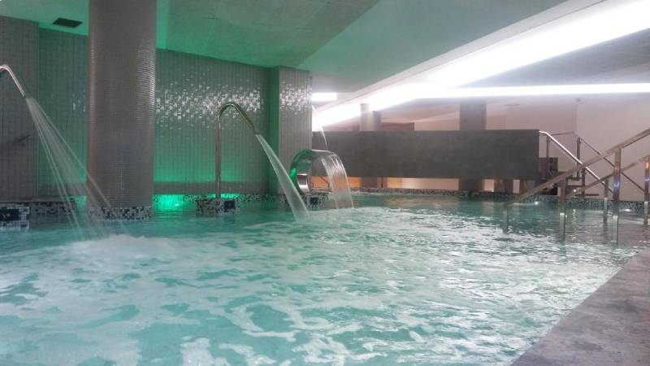
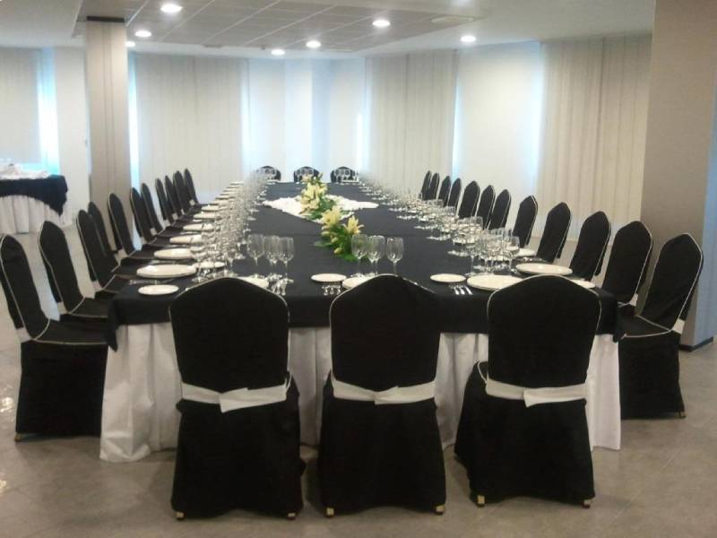
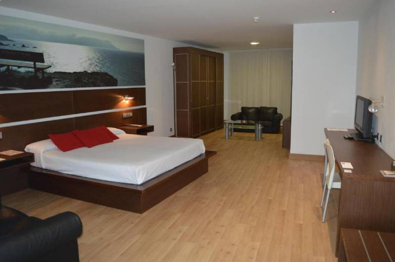
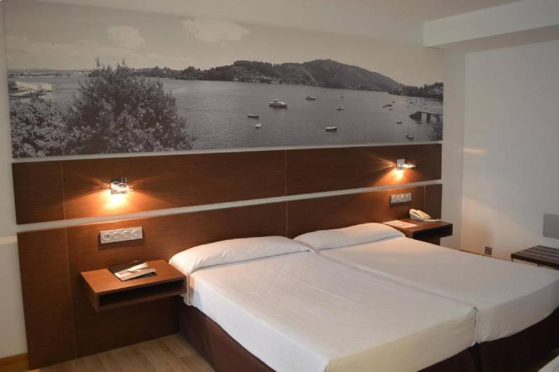
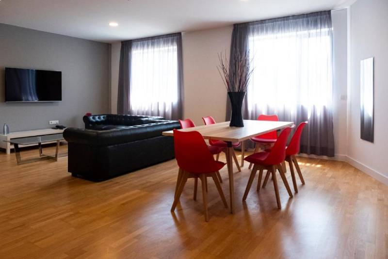

Спа - отель Sercotel Odeón — это комфортабельный и приятный отель в Ферроле , расположенный в коммерческом, развлекательном и спортивном районе Нерона, всего в 2 км от центра города. Наш отель удобно расположен в 2 минутах ходьбы от торгового центра Dolce Vita и окружен множеством мест отдыха и ресторанов. Этот отель с современным оформлением и авангардистским дизайном отличается полным спектром услуг, таких как конференц-залы, приятный кафе-бар, парковка, изысканный ресторан и бесплатный Wi-Fi на всей территории отеля. В отеле также есть спа-центр площадью 700 м².с бассейном площадью 120 м², джакузи, различными струями и водопадами. Помимо Панорамного Педилювиума.
Как и другие конференц-залы отеля, этот салон площадью 120 квадратных метров имеет естественное освещение и панели, которые позволяют объединить его с другими конференц-залами отеля.
Все номера спа-отеля Sercotel Odeón предназначены для обеспечения максимального комфорта. Номера нашего отеля в Нероне — это просторные номера с дополнительными преимуществами. Все они имеют кондиционер и бесплатный беспроводной доступ в Интернет .
В отеле 50 двухместных номеров с современным и приятным дизайном, с односпальными кроватями, телевизором, письменным столом, отоплением, кондиционером, феном, бесплатным Wi-Fi и многими другими услугами.
Просторные люксы с гостиной площадью 50 м2, столом на 6 персон, холодильником, двумя диванами, телевизором 50 дюймов и телефоном. В каждой комнате есть письменный стол, шкаф для одежды, телефон и телевизор 42 дюйма.
